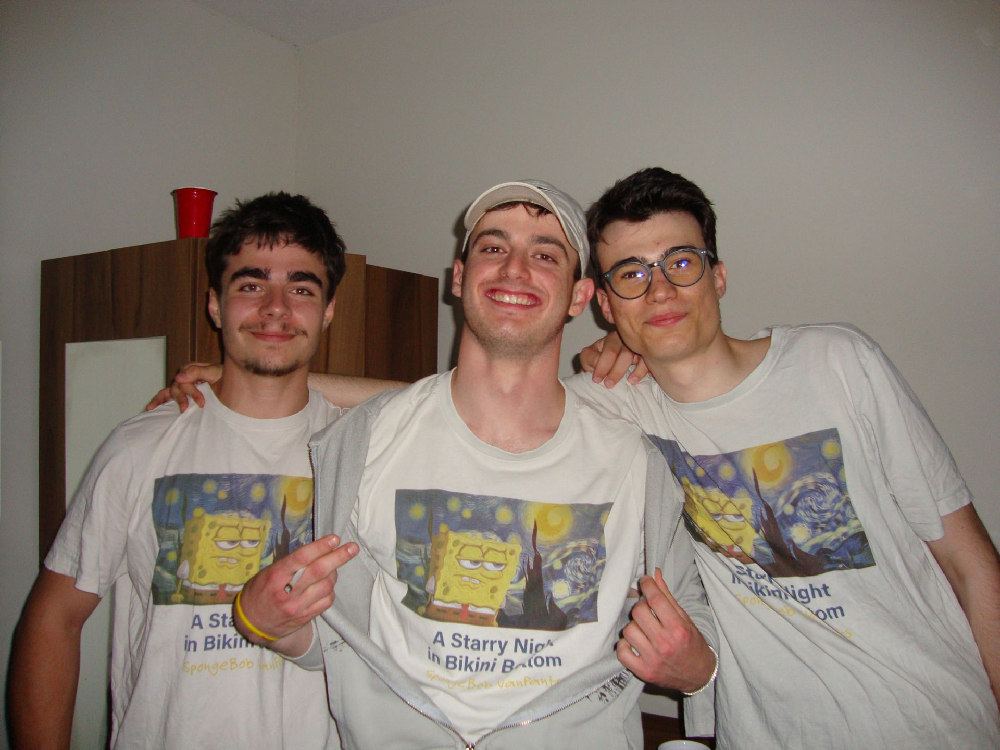
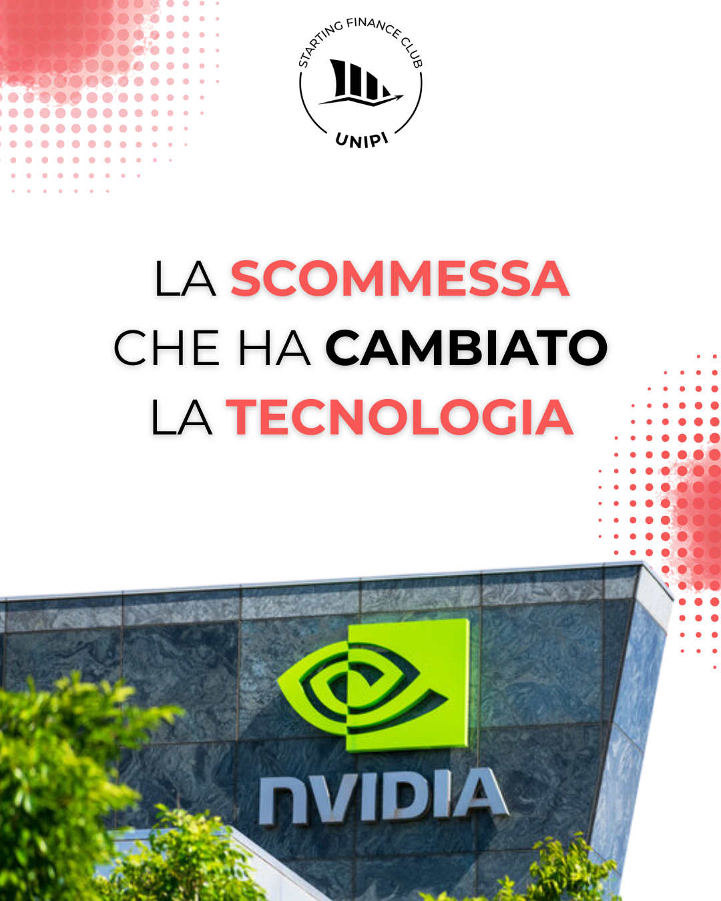
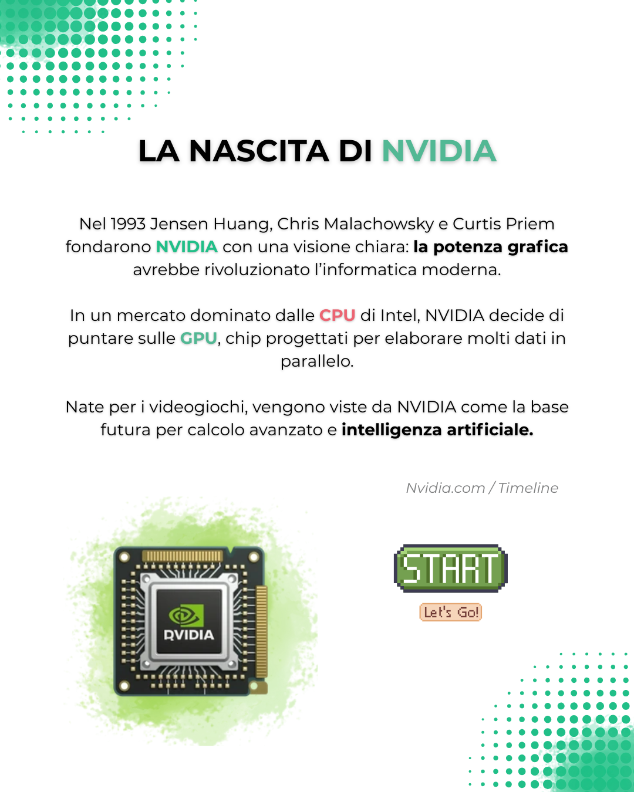
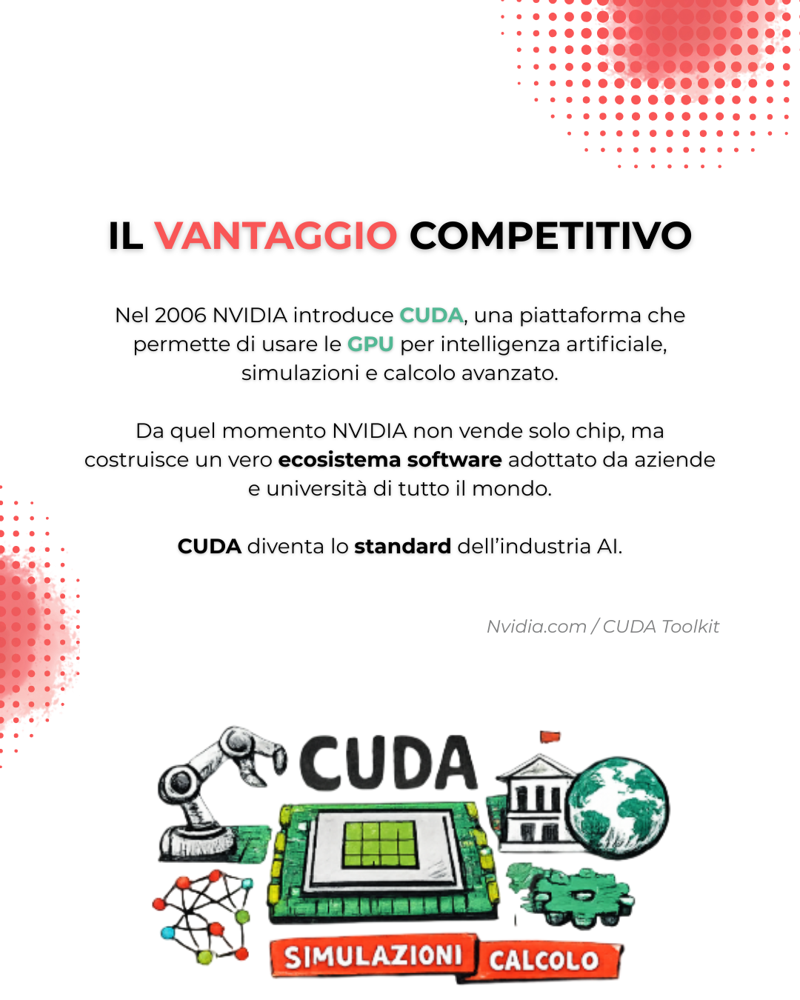
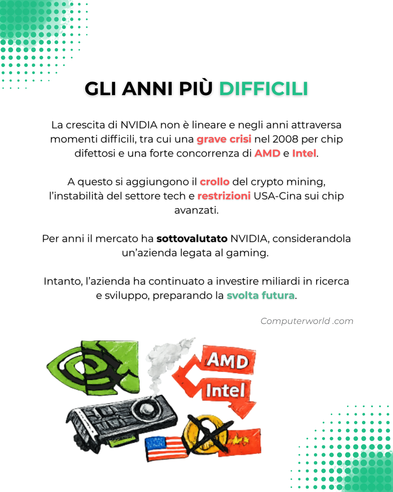
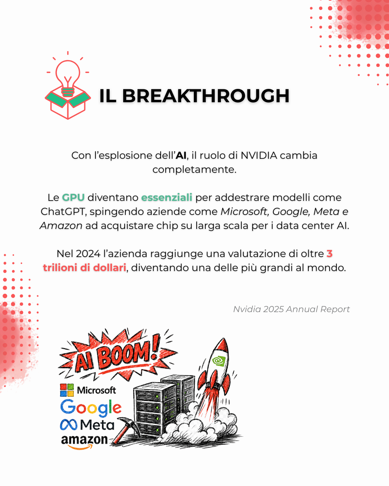
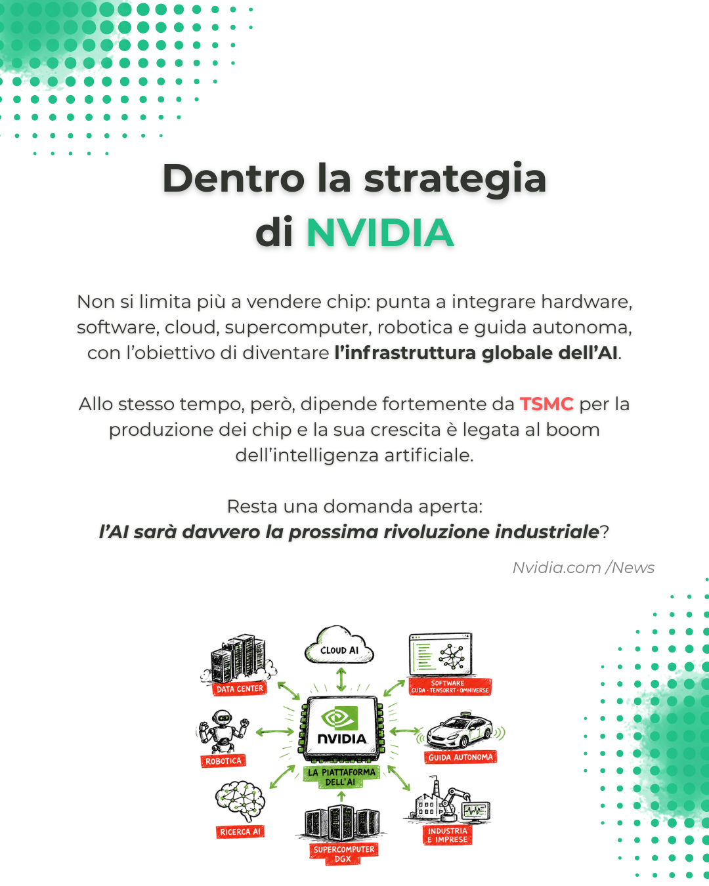
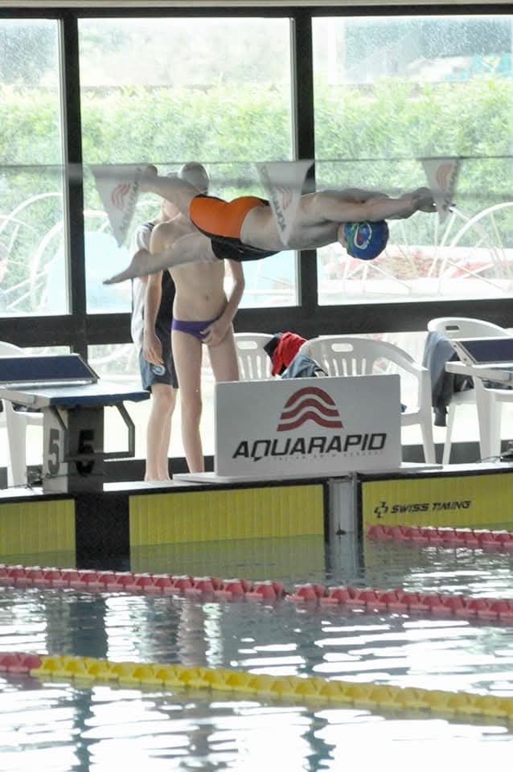

PreplyCopilot
A Telegram-to-Notion lesson logger built with n8n. Logs lessons from a voice or text message in seconds.
n8n, Telegram API, Notion API, Gemini, JavaScript
GitHubBSc Business Administration @UniPi | Building stuff to fail better.
I hate friction and bureaucracy. That's why I build systems: smooth workflows and durable knowledge.
When I work, I think about one thing: how is this going to help me in the future? When I have an answer, I move. I make mistakes, I adjust, and I optimize until something useful comes out.
Check my projects to see what I've been working on during my university years.
A Telegram-to-Notion lesson logger built with n8n. Logs lessons from a voice or text message in seconds.
n8n, Telegram API, Notion API, Gemini, JavaScript
GitHubA morning news brief from RSS to Telegram. The code selects, the language model only rewrites.
n8n, RSS, Mistral, JavaScript
GitHub KaggleA Markowitz optimizer with bootstrap confidence intervals.
Python, yfinance, Quantitative Finance
GitHub KaggleA Core-Satellite investment model in Excel, with a live Tableau layer.
Excel, Tableau, Quantitative Finance
GitHub Kaggle Tableau dashboardEarly project, retired.
Built to test AI orchestration for market research. The market didn't need it, so I stopped.
Dify, Gemini, Tavily, Hunter.io
GitHub KaggleFrom the Versilia beaches to a Dutch classroom to the first build, an ongoing journey.








Three things shaped how I work. None of them are jobs.

Shaping a Performance Mindset. Discipline and consistency: no shortcuts, you show up or the clock proves you didn't. Ability to execute under physical and mental fatigue. Complex results are the accumulation of small, daily repetitions.
Developing Strategic Patience. Pattern recognition, catching small details before they become a problem. Patience over impulse: slowing down and thinking ahead when things get complicated.
Expanding a Global Perspective. Erasmus in the Netherlands, travel through Taiwan and Thailand. Adapting quickly to new environments. Realizing there is rarely just one way to approach a problem.